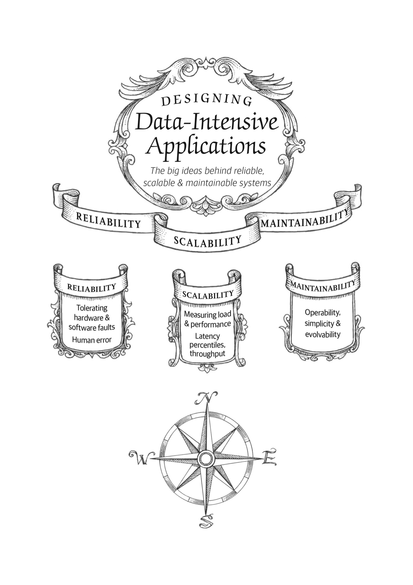

第一章：可靠性，可扩展性，可维护性
( )
)
关于数据系统的思考
单个工具已经不能满足应用系统的需求，总体工作被拆分成一系列能被单个工具高效完成的任务，并通过应用代码将它们缝合起来。比如一个缓存、索引、数据库协作的例子：
一个应用被称为数据密集型的，如果数据是其主要挑战（数据量，数据复杂度、数据变化速度）——与之相对的是计算密集型，即处理器速度是其瓶颈。 软件系统中很重要的三个问题：
- 可靠性（Reliability）：系统在困境（硬件故障、软件故障、人为错误）中仍可正常工作
- 可扩展性（Scalability）：有合理的办法应对系统的增长（数据量、流量、复杂性）
- 可维护性（Maintainability）：许多不同的人在不同的生命周期，都能高效地在系统上工作。
可靠性
定义
- 造成错误的原因叫做故障（fault），能预料并应对故障的系统特性可称为容错（fault-tolerant）或者韧性（resilient）。讨论容错时，只有讨论特定类型的错误
- 故障（fault）不同于失效（failure）：故障指的是一部分状态偏离标准，而失效则是系统作为一个整体停止向用户提供服务。
- 通常倾向于容忍错误（而不是阻止错误），但也有预防胜于治疗的情况（比如安全问题）
硬件故障
- 一般都是增加单个硬件的冗余度
- 云平台的设计是优先考虑灵活性和弹性，而不是单机可靠性。
软件错误
- 这类软件故障的bug 通常潜伏很长时间，直到被异常情况触发为止。往往是某个假设出于某种原因最后不在成立了。
- 解决办法：仔细考虑假设和交互；彻底的测试；重启；监控。
人为错误
- 人是不可靠的，运维配置错误是导致服务中断的首要原因。
- 解决办法：最小化犯错机会的方式设计系统；容易犯错的地方解耦；测试；监控；培训。
可扩展性
定义
- 可扩展性（Scalability）是用来描述系统应对负载增长能力的术语。
描述负载
-
负载可以用负载参数的数字来描述，取决于系统架构
-
推特的发推设计：
a. 推文放在全局推文集合中，查询的时候做 join

b.推文插入到每个关注者的时间线中，「扇出」比较大，当有千万粉丝的大 V 发推压力大

c.推特从方案一变成了方案二，然后变成了两者结合的方式
描述性能
- 当描述好负载以后，问题变成了：
a. 增加负载参数并保持系统资源不变时，系统性能将受到什么影响？
b. 增加负载参数并希望性能不变时，需要增加多少系统资源？ - 批处理系统，通常关心吞吐量（throughput）；在线系统，通常更关心响应时间（response time）
- 对于系统响应时间而言，最好用百分位点，比如中位数、p99 等标识。

- 测量客户端的响应时间非常重要（而不是服务端），比如会出现头部阻塞、网络延迟等。
- 实践中的百分位点，可以用一个滑动的时间窗口（比如 10 分钟）进行统计。可以对列表进行排序，效率低的话，考虑一下前向衰减，t-digest 等方法近似计算。

应对负载的方法
- 纵向扩展：转向更强大的机器
- 横向扩展：将负载分布到多台小机器上
- 弹性系统：检测到负载增加时自动增加计算资源
- 跨多台机器部署无状态服务比较简单，但是把带状态的数据系统从单节点变成分布式配置则可能引入许多额外复杂度。因此，应该尽量将数据库放在单个节点上。
可维护性
- 在设计之初就尽量考虑尽可能减少维护期间的痛苦，从而避免自己的软件系统变成遗留系统。
- 三个设计原则：可操作性（Operability）便于运维团队保持系统平稳运行。简单性（Simplicity）从系统中消除尽可能多的复杂度（complexity），使新工程师也能轻松理解系统。（注意这和用户接口的简单性不一样。）可演化性（evolability）使工程师在未来能轻松地对系统进行更改，当需求变化时为新应用场景做适配。也称为可扩展性（extensibility），可修改性（modifiability）或可塑性（plasticity）。
可操作性：人生苦短，关爱运维
● 尽量自动化
简单性：管理复杂度
● 消除额外的（accidental）的复杂度 ● 消除额外复杂度的最好工具之一是抽象（abstraction）
可演化性：拥抱变化
● 敏捷（agile） 工作模式为适应变化提供了一个框架
● 简单易懂的系统通常比复杂系统更容易修改，即可演化性（evolvability）